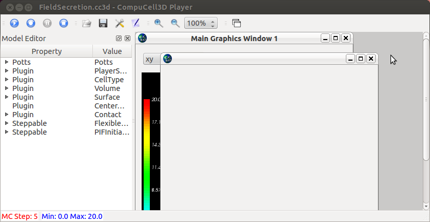
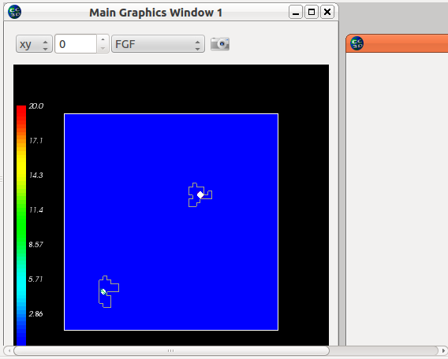
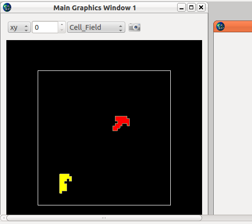

First, make sure the "Save image..." checkbox is checked in the Configuration (Prefs) Output panel.
Using the examples_PythonTutorial/FieldSecretion/FieldSecretion.cc3d model as input:
Step 4 Flips 15/3080 Energy -3507 Cells 2 Inventory=2
---- GraphicsFrameWidget.py: _takeShot(): self.renWin.GetSize()= (400, 400)
---- GraphicsFrameWidget.py: _takeShot(): fieldType= ('FGF', 'ConField')
---- ScreenshotManager.py: add2DScreenshot(): scrData.plotData= ('FGF', 'ConField')
---- ScreenshotManager.py: add2DScreenshot(): THIS IS NEW SCRSHOT NAME FGF_ConField_2D_XY_0
FAST numberOfAttempts=3080
Number of Attempted Energy Calculations=21
Step 5 Flips 8/3080 Energy -982 Cells 2 Inventory=2
-->
randy@randy-amd64:~/CC3DWorkspace/FieldSecretion_cc3d_10_04_2012_10_04_24$ ls
FGF_ConField_2D_XY_0 FieldSecretion_cc3d_0005.png
FieldSecretion.cc3d FieldSecretion_cc3d_0006.png
FieldSecretion_cc3d_0000.png LatticeData
FieldSecretion_cc3d_0003.png Simulation
FieldSecretion_cc3d_0004.png
randy@randy-amd64:~/CC3DWorkspace/FieldSecretion_cc3d_10_04_2012_10_04_24$ ll FGF_ConField_2D_XY_0/
total 24
drwxrwxr-x 2 randy randy 4096 Oct 4 10:35 ./
drwxrwxr-x 5 randy randy 4096 Oct 4 10:35 ../
-rw-rw-r-- 1 randy randy 4840 Oct 4 10:07 FGF_ConField_2D_XY_0_0005.png
-rw-rw-r-- 1 randy randy 4851 Oct 4 10:35 FGF_ConField_2D_XY_0_0006.png
The 1st pair of debug lines are for the image in the default graphics window; the 2nd pair are related to the camera icon images.
Step 3 Flips 15/3080 Energy -4659 Cells 2 Inventory=2 ---- SimpleTabView.py: handleCompletedStepRegular(): calling takeSimShot w/ screenshotFileName= /Users/heiland/CC3DWorkspace/FieldSecretion_cc3d_10_05_2012_11_42_26/FieldSecretion_cc3d_0003.png ----MVCDrawView2D.py: takeSimShot(): vtkPNGWriter, fileName= /Users/heiland/CC3DWorkspace/FieldSecretion_cc3d_10_05_2012_11_42_26/FieldSecretion_cc3d_0003.png ---- ScreenshotManager.py: outputScreenshots(): doing os.mkdir on scrFullDirName= /Users/heiland/CC3DWorkspace/FieldSecretion_cc3d_10_05_2012_13_17_56/FGF_ConField_2D_XY_0 ---- ScreenshotManager.py: outputScreenshots(): calling self.screenshotGraphicsWidget.takeSimShot( /Users/heiland/CC3DWorkspace/FieldSecretion_cc3d_10_05_2012_11_42_26/FGF_ConField_2D_XY_0/FGF_ConField_2D_XY_0_0003.png ----MVCDrawView2D.py: takeSimShot(): vtkPNGWriter, fileName= /Users/heiland/CC3DWorkspace/FieldSecretion_cc3d_10_05_2012_11_42_26/FGF_ConField_2D_XY_0/FGF_ConField_2D_XY_0_0003.png
One could test what's being done down in ScreenshotManager.py: outputScreenshots(), via the Python interpreter:
>>> import os
>>> os.mkdir('/Users/heiland/CC3DWorkspace/mysubdir')
(replacing the above path with your own)

After selecting the FGF field (combobox widget) and then clicking the camera icon, a blank window should popup. In the terminal, you should get a debug line as shown above ("THIS IS NEW SCRSHOT...").

The blank window should be moved away from the graphics window, but NOT closed or minimized.

Switching back to the Cell_Field will cause those images to be saved in the main output directory (~/CC3DWorkspace/FieldSecretion*/*).